Projet Excel
Analyse performance commerciale
Dans ce projet, j'analyse un fichier de ventes pour suivre la performance commerciale, nettoyer les données, contrôler leur qualité et créer un tableau de bord exploitable.
Dataset brut : le projet commence avec un fichier de ventes contenant plusieurs colonnes commerciales à analyser.
L'objectif est d'obtenir une base fiable avant de construire des indicateurs de suivi et une lecture claire de la performance.
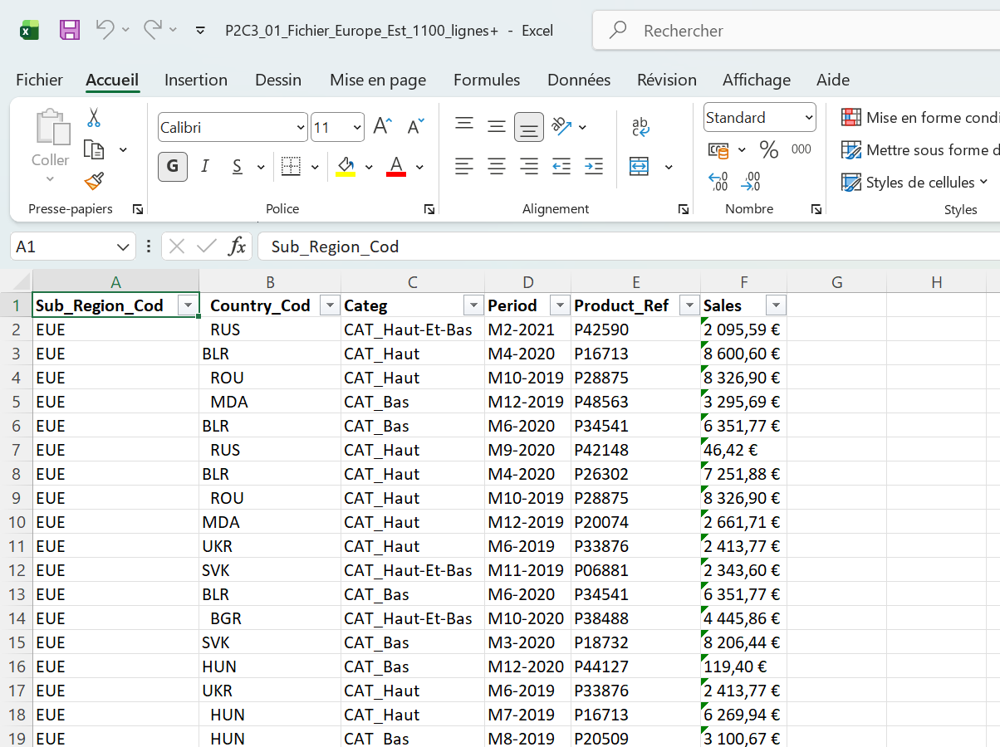
Identification des doublons : pour vérifier les lignes répétées, j'ai d'abord créé une clé de contrôle avec la fonction CONCATENER dans Excel.
Cette clé regroupe plusieurs colonnes importantes sur une même ligne. Ensuite, j'ai appliqué une mise en forme conditionnelle des doublons afin de repérer visuellement les enregistrements à contrôler avant suppression.
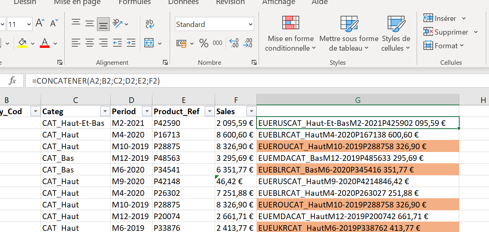
Suppression des doublons : après avoir confirmé les doublons, j'ai supprimé les lignes répétées pour conserver une base plus propre.
Cette étape évite de fausser le chiffre d'affaires, les quantités ou les indicateurs de performance commerciale.
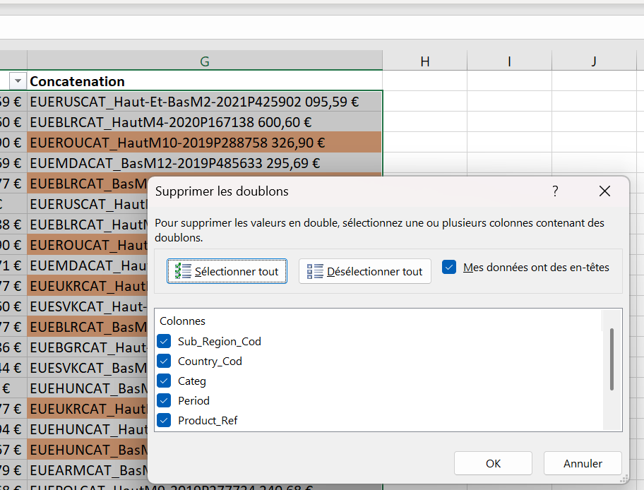
Contrôle du nettoyage : j'ai aussi documenté le nombre de valeurs supprimées pour garder une trace du traitement réalisé.
Cela permet de rendre la démarche plus transparente et de justifier les modifications appliquées au dataset.
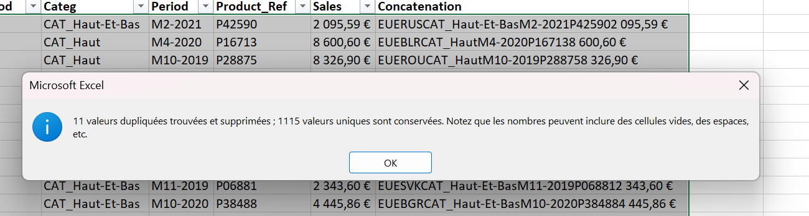
Transformation en tableau : j'ai transformé la plage de données en tableau Excel pour faciliter les filtres, les formules et les analyses.
Cette structure rend le fichier plus robuste et plus facile à mettre à jour.
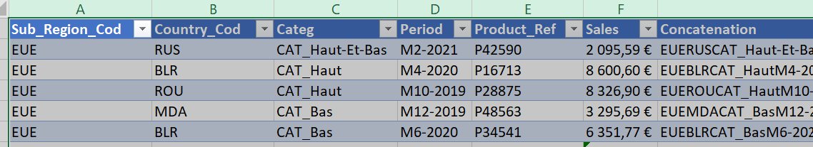
Traitement des colonnes : j'ai préparé les champs utiles pour l'analyse commerciale afin de mieux exploiter les données.
Cette étape permet de rendre les colonnes plus lisibles et plus adaptées aux tableaux croisés, statistiques et graphiques.
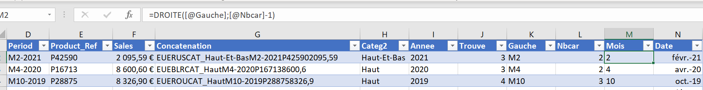
Table de correspondance : j'ai utilisé une table de correspondance pour retrouver les informations liées au code produit, comme le nom du produit, le prix de vente et le prix d'achat.
Cette étape enrichit la base de ventes et permet ensuite de calculer des indicateurs plus précis sur les produits et la marge.
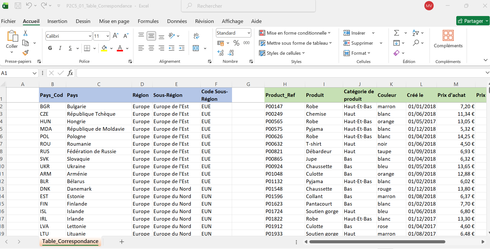
Dataset nettoyé : après les traitements, la base devient plus claire, plus structurée et prête pour l'analyse.
C'est à partir de cette version que les indicateurs et visualisations peuvent être construits plus efficacement.
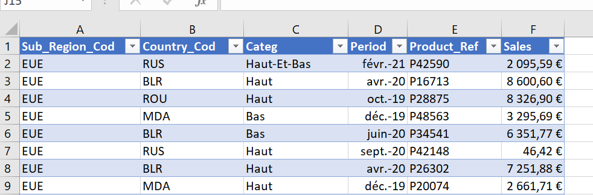
Statistiques commerciales : j'ai calculé des indicateurs pour synthétiser la performance globale.
Ces statistiques donnent une première lecture des résultats avant la construction du tableau de bord final.
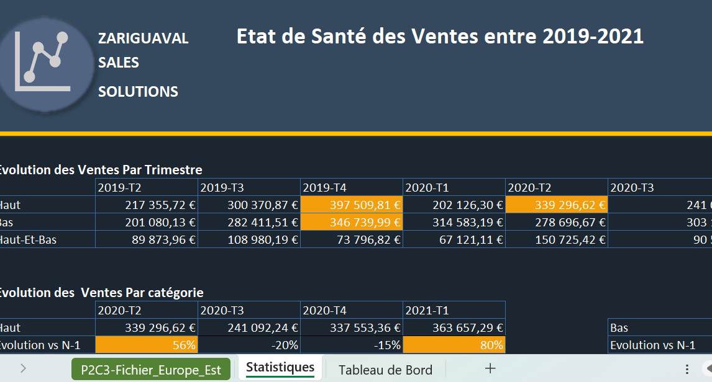
Ventes par produit : cette analyse permet d'identifier les produits qui contribuent le plus à la performance commerciale.
Elle aide à repérer les références fortes et celles qui peuvent nécessiter une action commerciale.
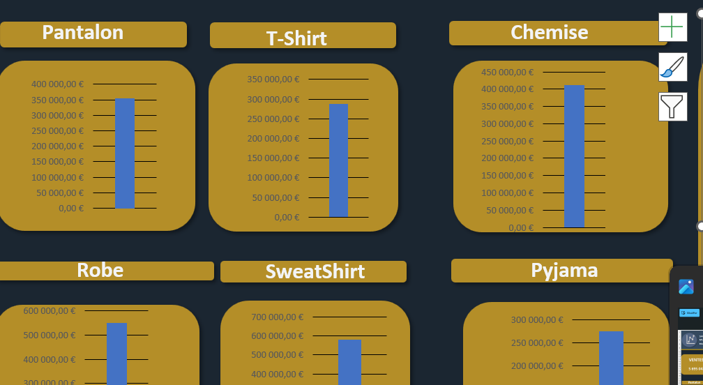
Évolution et catégories : j'ai analysé la répartition des ventes par catégorie pour comprendre quels segments portent le plus l'activité.
Cette visualisation permet de comparer les catégories et de mieux lire la structure du chiffre d'affaires.
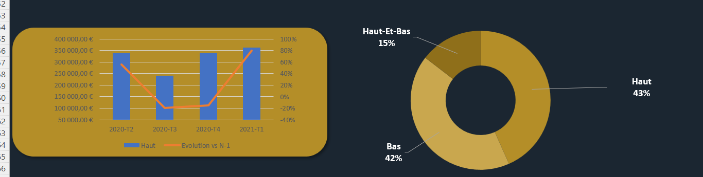
Évolution temporelle : j'ai observé les ventes par mois et par année pour repérer les tendances et les variations dans le temps.
Cette étape aide à comprendre la dynamique commerciale et les périodes les plus performantes.
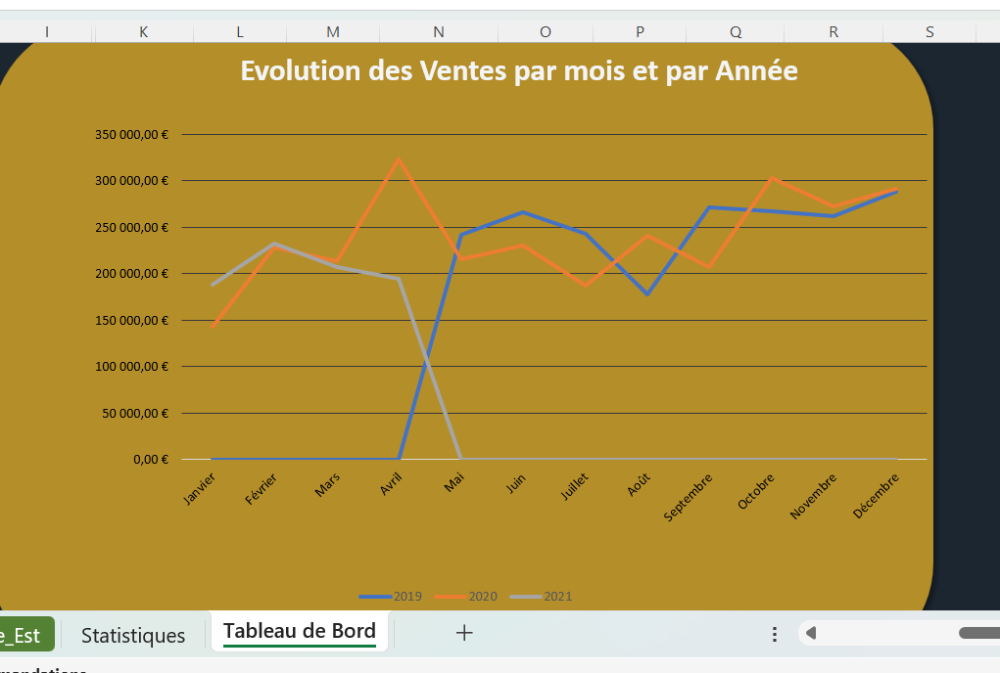
Tableau de bord final : le dashboard permet de suivre les principaux indicateurs et de visualiser rapidement la performance commerciale.
Il rassemble les informations importantes pour faciliter la prise de décision et repérer les points d'amélioration.